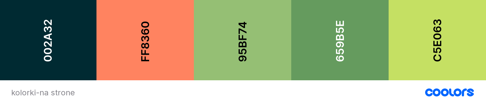

Różne przydatne stronki
-
Coolors
Program pomagający dobrać kolory na stronę(i nie tylko).Kłódka blokuje kolor, spacja zmienia na nowy
-
animista
Strona z gotowymi animacjami CSS.Można podejrzeć albo wykorzystać (z podaniem źródła)
-
Nu Validator
Tutaj można sprawdzić poprawność kodu
-
MDN web docs
Bogata dokumentacja w kilku językach
-
Ścieżka rozwoju
Ścieżka rozwoju frontendowca
-
dokumentacja HTML
Specyfikacja HTML wydana przez W3C
-
dokumentacja CSS
Specyfikacja CSS wydana przez W3C
-
Gierka CSS
Gierka ćwicząca opanowanie selektorów CSS
-
Repl.it
Strona do dzielenia się kodem
-
CSS-TRICKS
Strona z wyzwaniami frontendowymi.Do zabawy na później
-
DevUpgrade
Jakub Pilimon i Sławomir Sobótka pomogą Ci wyostrzyć modelowanie obiektowe/funkcyjne oraz testowanie automatyczne.
-
Ćwiczenia JavaScriptu
Strona do ćwiczenia czystego JavaScripta. Różne zadania i stopnie trudności.